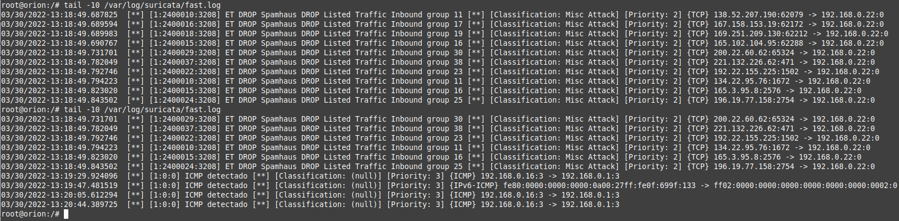

2.2.1 NIDS Suricata
1. Introducción
Suricata está basado en un conjunto de reglas desarrolladas externamente para supervisar el tráfico de la red y proporcionar alertas al administrador del sistema cuando se producen eventos sospechosos.
2. Modos de trabajo de Suricata
Se tienen dos modos de trabajo: Modo IDS o modo In-line IDS/IPS.
1. Modo IDS
Con este modo:
- No hay un punto único de fallo.
- Rápido para desplegar.
- Vista limitada y acciones limitadas ante un ataque.
Para que empiece a trabajar hay que redireccionar el tráfico desde el MikroTik hacia Suricata. Se puede realizar con: Port Mirror (Switch), Packet Sniffer (Tool Packet Sniffer) o Mangle (Sniff TZSP).
Ejemplo 1: Port Mirroring.
[admin@MikroTik] >interface ethernet switch set switch1 mirror-source=ether2_to-cliente
mirror-target=ether4-to_suricata name=switch1
Ejemplo 2: Packet Sniffer
[admin@MikroTik] >/ip firewall calea add chain=forward action=sniff sniff-target=192.168.1.1
2. IDS / IPS - In-line mode
Con este modo:
- Capaz de tomar acciones contra el tráfico malicioso.
- Puede identificar origen y destino con mayor precisión.
- No necesita mucha configuración en otros equipos de la red(ejemplo: router o switch).
- Punto único de fallo y configuración más compleja.
3. Salidas de Suricata
Eve JsonOutpus. Desde la versión2.0, Suricata puede producir la salida de alerts, http events, dnsevents, tlsevents a través de json.
La forma más común de utilizar esta salida es a través de EVE, donde todos los logs van a un solo fichero. Esta salida puede ser tratada por una variedad importante de herramientas ELK (elasticsearch, logstash, kibana).
3. Escenario de trabajo
A continuación, se describe el escenario utilizado para los apartados:
- 4. Etapas para la instalación configuración y pruebas de Suricata.
- 5. Añadiendo de Reglas personalizadas.
- 6. Lanzar ataque y comprobar.
|
Ubuntu Server 20.04.4
|
En la siguiente figura, se muestra un esquema típico de una red a monitorizar con Suricata.
{kind=link}
4. Etapas para la instalación configuración y pruebas de Suricata.
Las etapas que se seguirán son las siguientes:
- Instalación de Suricata — IDS/IPS.
- Configuración Básica de Suricata.
- Suricata — Update Signatures.
- Verificar el estado de Suricata.
- Prueba de Detección.
- Ver archivos de registro de Suricata.
- Rotar archivos registro (logs) de Suricata.

Etapa 1. Instalación de Suricata — IDS/IPS.
Suricata cuenta con un repositorio oficial el cual se puede agregar y poder realizar la instalación en el sistema. Los comandos son los siguientes para agregar el ppa, instalar y habilitar suricata son los siguientes:
root@orion:/#add-apt-repository ppa:oisf/suricata-stable
root@orion:/#apt update
root@orion:/#apt install suricata
root@orion:/#systemctl enable suricata.service
Etapa 2. Configuración Básica de Suricata
Una vez instalado, hay que editar el fichero de configuración /etc/suricata/suricata.yaml e incorporar los datos de la red de la organización y el nombre de la interfaz de red.
Para determinar el nombre de la red, se puede usar el siguiente comando:
root@orion:/#ip -p -j route show default

Los datos a incorporar al fichero /etc/suricata/suricata.yaml son los siguientes:
HOME_NET: "[192.168.0.0/24]"
EXTERNAL_NET: "!$HOME_NET“
af-packet:
- interface: enps03
donde,
- HOME_NET: Para definir cuáles son los rangos IP locales.
- - interface: enps03: Es el nombre de la interfaz de red que escuchará el tráfico
Suricata admite la recarga de reglas en vivo, lo que significa que se pueden agregar, eliminar y editar reglas sin necesidad de reiniciar el proceso de ejecución de Suricata. Para habilitar la opción de recarga en vivo, hay que desplazarse hasta la parte inferior del archivo de configuración y agregar las siguientes líneas:
detect-engine:
- rule-reload: true
A continuación, hay que iniciar el servicio:
root@orion:/#systemctl start suricata
Se comprueba el estado del servicio.
root@orion:/#systemctl status suricata
Etapa 3. Suricata — Update Signatures (firmas/reglas)
Una vez se ha instalado y realizado la configuración básica de Suricata, se deben definir las reglas a emplear para comparar el tráfico procesado con éstas y generar alertas si ocurre una coincidencia (match) con alguna de ellas. El software base de Suricata ya integra numerosas reglas para protocolos como http, dns o dhcp entre otros. Además, se incluye la funcionalidad suricata-update, permitiendo gestionar e introducir más conjuntos de reglas existentes elaboradas por diversas organizaciones para Suricata. Algunas de estas fuentes requieren suscripción de pago y otras son abiertas. La fuente gratuita más utilizada es Emerging Threats, un centro de investigación de seguridad abierta dedicado a producir fuentes de datos sobre amenazas nuevas y actualizadas para plataformas IDS/IPS como Snort o Sutricata. Mediante la ejecución del comando suricata-update, se integra directamente el conjunto de relgas de la compañía Emerging Threats, y las actualiza si ya están habilitadas. Este conjunto de reglas analizan diversos protocolos, comprueban comportamientos anómalos o sospechosos en la red, y detectan numerosos elementos maliciosos como direcciones IP. Además, Suricata permite crear manualmente nuevas reglas para poder generar alertas sobre algún tipo de tráfico en concreto que pueda resultar útil en la organización (esto se verá en el apartado 5. Añadiendo de Reglas personalizadas).
Las reglas tienen un formato específico, y se componen de tres apartados:
- Acción: determina lo que ocurre cuando la regla coincide. Existen cuatro tipos:
- Pass: para dejar de escanear el paquete ignorando las reglas.
- Drop: para eliminar o bloquear el paquete (solo disponible cuando Suricata se ejecuta en modo IPS).
- Reject: para enviar un paquete de rechazo de la comunicación tanto al remitente como receptor (con modo IPS activado el paquete también se dropea).
- Alert: para generar un evento de tipo alerta.
- Cabecera: Define el protocolo, direcciones IP, puertos, y dirección de la comunicación. Permite numerosos protocolos, como por ejemplo tcp, udp, icmp, ip, http, ftp, smb, dns, modbus, nfs, ntp, smtp, krb5...
- Opciones de regla: Especifica los detalles de la regla. Aquí es donde se indican condiciones detalladas mediante el uso de palabras claves propias de cada protocolo. Por ejemplo, se podría definir si existe un determinado string en el cuerpo de una petición del protocolo http, o definir un ttl del paquete en el protocolo ip. Existen numerosas combinaciones y posibles atributos que permiten a los expertos en este área crear reglas muy específicas para evitar o detectar ciberataques.
Suricata utiliza las firmas para activar alertas, por lo que es necesario instalarlas y mantenerlas actualizadas. Las firmas también se denominan reglas, de ahí el nombre de archivos de reglas.
En el fichero de configuración de suricata /etc/suricata/suricata.yaml, la línea suricata.rules, indica el el fichero por defecto con las reglas que se van a aplicar y que se encuentra en el path default-rule-path.

3.1 Actualización de reglas
Aunque es posible descargar e instalar las reglas manualmente accediendo al conjunto de reglas y añadirlas a un directorio (o en yaml, config, setting) desde esta ubicación: http://rules.emergingthreats.net/open/suricata, para nuestro caso, se va a automatizar este proceso.
Hay varios conjuntos de reglas. Por ejemplo están: Emerging Threats Open, Emerging Threats Pro y VRT. Para nuestro caso, se utilizará Emerging Threats Open.
Para descargar/actualizar el conjunto de reglas de Emerging Threats Open, el comando es el siguiente:
root@orion:/#suricata-update
Esto descargará el conjunto de reglas en /var/lib/suricata/rules/ (ruta predeterminada) y combinará todas las reglas en un único archivo que se llama suricata.rules.
Si se recuerda la sección de reglas del fichero de configuración de Suricata, la ruta por defecto de las reglas es /var/lib/suricata/rules/ y el fichero de reglas es suricata.rules. La sección es la siguiente:
default-rule-path: /var/lib/suricata/rules
rule-files:
- suricata.rules
3.2 Agregar una nueva fuente de reglas
Para asegurar que la lista esté actualizada, el comando es el siguiente:
root@orion:/#suricata-update update-sources
Para mostrar la lista, el comando es el siguiente:
root@orion:/#suricata-update list-sources
Cada uno de los conjuntos de reglas tiene un nombre que tiene un prefijo de "proveedor", seguido de un nombre de conjunto. Por ejemplo, el conjunto de reglas de identificación de tráfico de OISF se llama "oisf / trafficid". Si se desea habilitar "oisf/trafficid" el comando es:
root@orion:/#suricata-update enable-source oisf/trafficid
root@orion:/#suricata-update
Para comprobar la lista habilitada, hay que ejecutar el siguiente comando:
root@orion:/#suricata-update list-enabled-sources
Si se desea deshabilitar una regla, por ejemplo, la regla et/pro, el comando es:
root@orion:/#suricata-update disable-source et/pro
Si se desea eliminar una regla, por ejemplo, la regla et/pro, el comando es:
root@orion:/#suricata-update remove-source et/pro
3.3 Gestionar las reglas de Suricata
La eficacia de IDS Suricata se basa en una buena gestión de las reglas. Con la gestión de las reglas, se pueden evitar falsos positivos así como asegurar que las reglas utilizadas estén actualizadas y permitan la detección de amenazas recientes.
Las reglas de Suricata activadas por defecto generan muchos falsos positivos (alertas que no son problemas reales). Se recomienda dejar que Suricata se ejecute durante unas horas usando el equipo normalmente y analizar cuidadosamente las alertas en el archivo fast.log y deshabilitar ciertas reglas.
Por ejemplo, si utiliza Dropbox o Skype en la red, se deberán desactivar las reglas correspondientes para no generar alertas innecesarias para la red.
Para aumentar la seguridad, es posible que también se deban agregar nuevas fuentes de reglas o crear las propias. El formato de reglas es:
- Action (drop, alert, or pass).
- Header (protocol, ip address(es), ports)
- Options (additional qualification values to determine if the packet/flow/whatever match)
donde:
- Action: corresponde con la acción (drop, alert, pass, etc.) que realizará Suricata cuando se identifica la regla en el flujo de red. Ejemplos de acciones:
- Pass: Si una firma coincide y contiene pass, Suricata detiene el escaneo del paquete y salta al final de todas las reglas (solamente para el paquete actual).
- Drop: Esta acción es solo para el modo IPS. Si el programa encuentra una firma que coincide, suricata para inmediatamente y el emisor del paquete no recibe un mensaje con lo que ha pasado, además, Suricata genera una alerta.
- Reject: Esta acción es un rechazo activo del paquete, tanto el emisor como el receptor reciben un paquete rechazado. Si es TCP será a Rest-packet, si es otro protocolo recibirán un icmp-error packet. Además, Suricata también genera una alerta.
- Alert: Si una firma coincide y contiene alert, el paquete será tratado como cualquier otro paquete que no es una amenaza, pero se generará un alerta.
- Header: esta sección corresponde al flujo de red en concreto que se va a analizar. De origen a destino. Con la palabra “any” se le puede indicar a Suricata que se analizarán todos los puertos. Sirve para definir el protocolo (tcp, http, ftp, dns, tls…) así como la dirección IP y el puerto de origen y destino del tráfico involucrado en la alerta. Ejemplo de cabeceras:
- Protocolo: Esta palabra reservada significa el protocolo que va a analizar la firma. Se puede elegir entre cuatro configuraciones: tcp, udp, icmpe ip.
- Source y destination. Se pueden asignar direcciones IPv4 y IPv6 tanto combinadas como separadas. Se pueden utilizar también variables. Estas variables se pueden asignar en el fichero Yaml.
- Puertos. Se pueden asignar puertos o wildcars como any.
- Dirección. Indica en que dirección debe coincidir la firma.
- source -> destination.
- source <> destination ambas direcciones.
- Options: Las opciones de la regla se muestran entre paréntesis y separadas por comas. Algunas opciones tienen parámetros, que se especifican mediante su palabra clave seguida de dos puntos y el valor del parámetro.
Las reglas se identifican por su identificador de firma, el parámetro sid. Por ejemplo, si se accede al fichero suricata.rules, la regla para usar Dropbox es:
alert tls [108.160.162.0/20,162.125.0.0/16,192.189.200.0/23,199.47.216.0/22,205.189.0.0/24,209.99.70.0/24,45.58.64.0/20] 443 ->
$HOME_NET any (msg:"ET POLICY Dropbox.com Offsite File Backup in Use"; flow:established,to_client; tls.cert_subject; content:"CN=*.dropbox.com";
fast_pattern; threshold: type limit, count 1, seconds 300, track by_src; reference:url,www.dropbox.com; reference:url,dereknewton.com/2011/04/dropbox-authentication-static-host-ids/;
classtype:policy-violation; sid:2012647; rev:7; metadata:created_at 2011_04_07, updated_at 2022_03_25;)
Para probar la regla, se accede al contenidos del sitio https://www.dropbox.com mediante curl:
root@orion:/#curl https://www.dropbox.com/
Si se accede a fast.log, se puede ver el resultado de aplicar la regla anterior:
3.4 Deshabilitar ciertas reglas
Dependiendo de su uso, algunas reglas deben deshabilitarse. Por ejemplo, si permite el uso de Dropbox dentro de la red, la regla para el SID 2012647 debe estar deshabilitada.
Para ello, hay que editar el archivo que contiene las reglas para desactivar:
root@orion:/#nano /etc/suricata/disable.conf
En el fichero, hay que agregar la lista de reglas para desactivar identificadas por su identificador de firma (SID). Ejemplo: 1:2012647.
Un ejemplo de reglas que se podría desactivar son las siguientes:
1:2012647 # Dropbox
1:2013504 # APT package management
1:2210044 # SURICATA STREAM Packet with invalid timestamp
1:2029706 # COVID
1:2029707 # COVID
1:2029709 # COVID
1:2027865 # DNS Query to .cloud
1:2210054 # SURICATA STREAM excessive retransmissions
1:2260000 # Applayer Mismatch protocol both directions
1:2210020 # STREAM ESTABLISHED packet out of window
1:2016150 # INFO Session Traversal Utilities for NAT
1:2027758 # DNS Query for .cc
Si es necesario, es posible desactivar todas las reglas que pertenecen al mismo tipo de clasificación de clases. Por ejemplo, la clasificación de decodificación de comandos de protocolo genérico genera demasiadas alertas y es posible deshabilitar todas las reglas en esta clasificación. Para realizar esta acción, se edita el fichero disable.conf y se añade la siguiente línea:
re:classtype:protocol-command-decode
A continuación, hay que actualizar las reglas para consolidar los cambios:
root@orion:/#suricata-update

Como se puede observar en la figura superior, hay 583 reglas modificadas, que corresponden a los cambios realizados anteriormente.
3.5 Actualizar las reglas
Para integrar la detección de las últimas amenazas, es necesario actualizar periódicamente las reglas de Suricata ejecutando el siguiente comando:
root@orion:/#suricata-update --disable-conf=/etc/suricata/disable.conf
A continuación, hay que reiniciar el servicio Suricata:
root@orion:/#systemctl restart suricata.service
Etapa 4. Verificar el estado de Suricata
Etapa 5. Prueba de Detección
Para probar la funcionalidad de Suricata (IDS), a continuación se realiza una prueba. Para ello, se utiliza curl para ver el contenido del sitio que se usará para la prueba.
root@orion:/#curl http://testmynids.org/uid/index.html
En la figura inferior, se puede observar como suricata utilizando las reglas de ETOpen detecta un posible ataque y que es el que se ha provocado anteriormente.
Reglas
- https://doc.emergingthreats.net/bin/view/Main/2015051
- https://doc.emergingthreats.net/bin/view/Main/2015052
- https://doc.emergingthreats.net/bin/view/Main/2015524
Etapa 6. Ver archivos de registro de Suricata
Suricata genera archivos de registro en el directorio /var/log/suricata. Además del tráfico de red y la actividad sospechosa que detecta, Suricata también registra información de servicio y estadísticas sobre el tráfico de red. Es necesario configurar un mecanismo de rotación para evitar que los ficheros puedan llenar el disco.
Los diferentes archivos de registro generados por Suricata son:
- suricata.log: mensajes de inicio de Suricata.
- stats.log: estadísticas sobre el tráfico de su red.
- fast.log: actividad sospechosa descubierta por Suricata.
- eve.json: tráfico de la red local, así como actividad sospechosa en formato JSON.
Etapa 7. Rotar archivos registro (logs) de Suricata
El tamaño del archivo de registro eve.json puede volverse muy grande rápidamente y con el tiempo, podría ocupar demasiado tamaño. Usar el mecanismo logrotate integrado en Linux es muy útil para evitar esto.
Como ejemplo, se configurará para registrar registros de Suricata durante 10 días y limitar el tamaño de cada archivo a 1 GB. Así los logs no podrán ocupar más de 10 GB en el disco mientras tengan un historial de los últimos 10 días. Los historiales más antiguos se eliminan automáticamente. El proceso es el siguiente:
1. Crear un archivo "/etc/logrotate.d/suricata" con el siguiente contenido:
/var/log/suricata/fast.log {
daily
maxsize 1G
rotate 10
missingok
nocompress
create
sharedscripts
postrotate
systemctl restart suricata.service
endscript
}
Para comprobar que la rotación está correctamente configurada y que funciona, se puede forzar manualmente con el comando:
root@orion:/#logrotate -f /etc/logrotate.conf
Por otro lado, el tamaño del archivo de registro de tráfico de red "eve.json" puede aumentar mucho (dependerá del tráfico de la red). Si solo interesan las alertas del archivo fast.log, se pueden desactivar los registros del archivo eve.json en el archivo de configuración /etc/suricata/suricata.yaml, pero ya no se tendrán registros que permitan analizar la causa de las alertas. La sección quedaría así:
- eve-log:
enabled: no
5. Añadiendo reglas personalizadas
Como ejemplo, se van a añadir una serie de reglas para generar diferentes alertas.
Regla 1. ICMP
Esta primera regla, generará alertas que detecte el tráfico ICMP de tipo "echo request" dirigido a la red interna (de cualquier IP, de cualquier puerto, a la red interna a cualquier puerto). El proceso es el siguiente:
1. Se crea un fichero ciber.rules en la ruta donde se tienen las regla, es decir, /etc/suricata/rules.
2. A continuación, se edita el fichero ciber.rules y se añade la regla siguiente.
alert icmp any any -> $HOME_NET any (msg: "ICMP: Ping entrante detectado";itype:8;sid:1000004;)
donde se alerta de conexiones tipo ICMP, de cualquier IP, de cualquier puerto, a cualquier IP de la red interna a cualquier puerto. Muestra el mensaje 'ICMP: Ping entrante detectado'.
3. A continuación, hay que indicar en el fichero de configuración de Suricata (/etc/suricata/suricata.yaml) el nombre del fichero con las reglas que se acaba de definir, para ello, se edita el fichero suricata.yaml, para indicarle la ruta donde se encuentran los ficheros con las reglas y el fichero de reglas a aplicar.
4. A continuación, hay que reiniciar el servicio.
root@orion:/#systemctl restart suricata
5. Por último, se realizan las comprobaciones de funcionamiento. Ejemplo: Si se realiza un PING a cualquier IP desde cualquier equipo, queda registrado:
- tail -f /var/log/suricata/fast.log
- tail -f /var/log/suricata/eve.json
Regla 2. Comprobar número excesivo de paquetes TCP SYN entrantes
En esta segunda regla, se comprueban si existen más de 5000 paquetes TCP SYN entrantes en los próximos 5 segundos.
alert tcp $EXTERNAL_NET any -> $HOME_NET any (msg:"LOCAL DOS SYN packet
flood inbound, Potential DOS"; flow:to_server; flags: S,12; threshold: type both,
track by_dst, count 5000, seconds 5; classtype:misc-activity; sid:1000001;)
alert tcp $HOME_NET any -> $EXTERNAL_NET any (msg:"LOCAL DOS SYN packet
flood outbound, Potential DOS"; flow:to_server; flags: S,12; threshold: type both,
track by_dst, count 5000, seconds 5; classtype:misc-activity; sid:1000002;)
6. Lanzar ataque y comprobar
Podemos lanzar un ataque DoS mediante el comando hping3 donde su sintaxis es:
hping3 -p 80 -a ip_falsa -S --flood IP_victima
donde:
- -S: Activa el flag SYN.
- --flood: le indica a hping que envíe los paquetes a la máxima velocidad posible.
- IP_victima: Dirección ip o dominio de la víctima a atacar.
Como ejemplo, se realiza el ataque al servidor ubuntu donde está suricata desde un equipo de la red (Linux Mint 19).
jc@jc-Latitude-E6430:~$hping3 -S --flood 192.168.0.22
Si se accede al log, se puede observar que Suricata (IPS) hace un drop (Miss attack) indicando la ip origen del ataque y la destino. Por lo tanto, suricata está bloqueando el ataque DoS de manera efectiva.

7. Referencias
Obra publicada con Licencia Creative Commons Reconocimiento No comercial Compartir igual 4.0